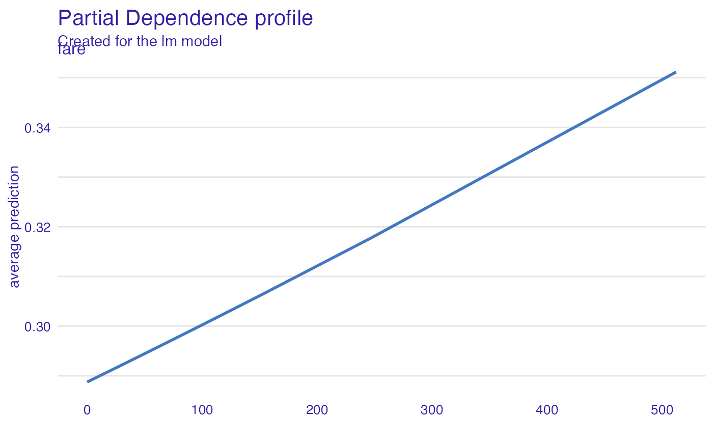
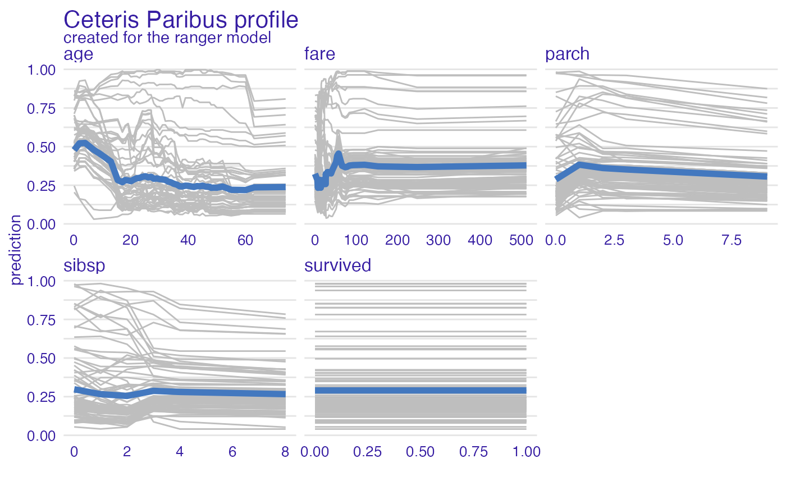
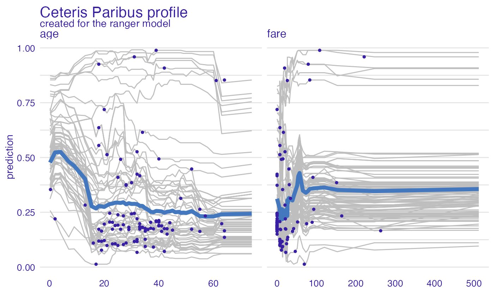
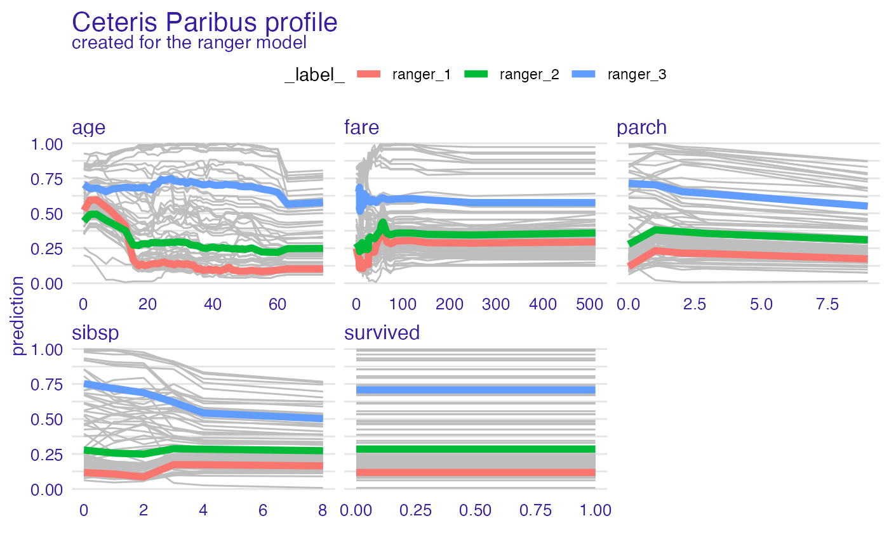
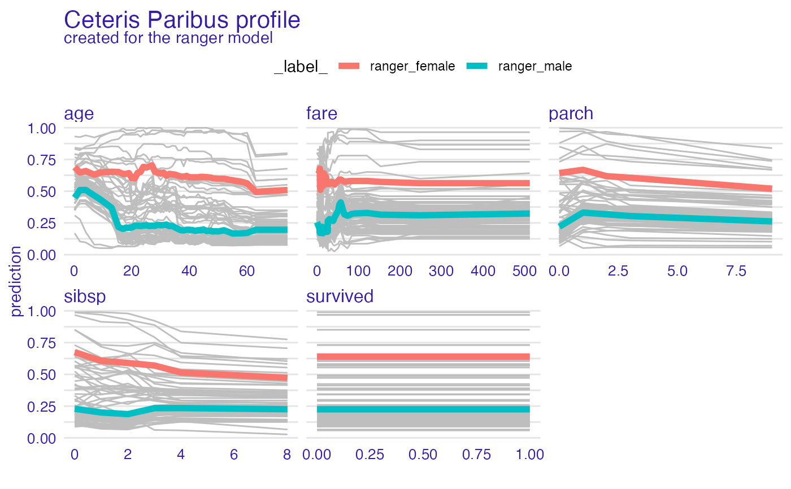
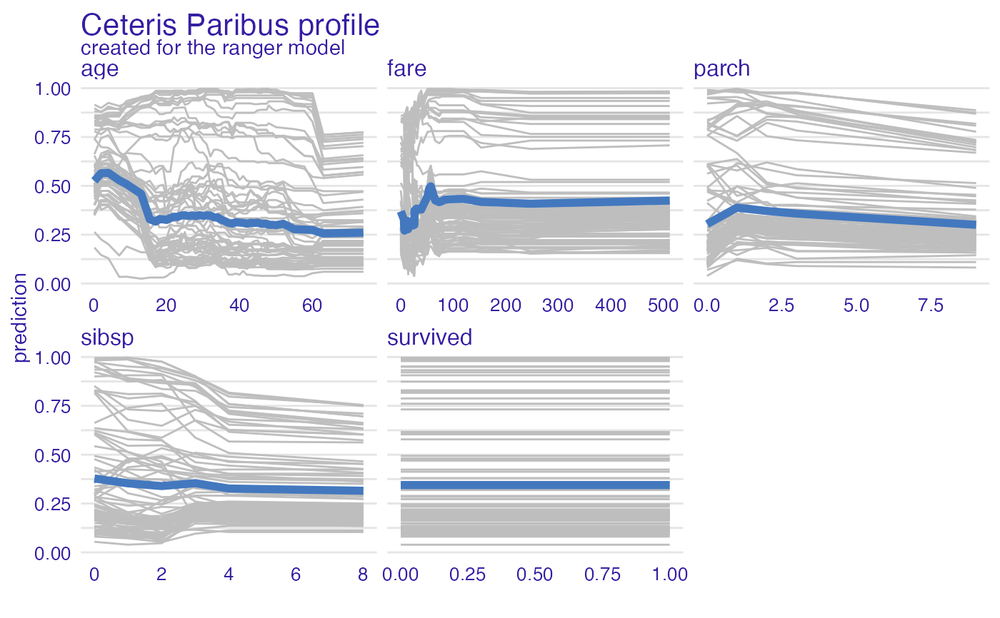
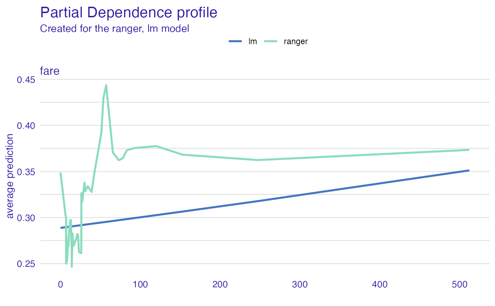

R/model_profile.R
model_profile.RdThis function calculates explanations on a dataset level set that explore model response as a function of selected variables.
The explanations can be calulated as Partial Dependence Profile or Accumulated Local Dependence Profile.
Find information how to use this function here: https://ema.drwhy.ai/partialDependenceProfiles.html.
The variable_profile function is a copy of model_profile.
model_profile(
explainer,
variables = NULL,
N = 100,
...,
groups = NULL,
k = NULL,
center = TRUE,
type = "partial"
)
variable_profile(
explainer,
variables = NULL,
N = 100,
...,
groups = NULL,
k = NULL,
center = TRUE,
type = "partial"
)
single_variable(explainer, variable, type = "pdp", ...)a model to be explained, preprocessed by the explain function
character - names of variables to be explained
number of observations used for calculation of aggregated profiles. By default 100. Use NULL to use all observations.
other parameters that will be passed to ingredients::aggregate_profiles
a variable name that will be used for grouping.
By default NULL which means that no groups shall be calculated
number of clusters for the hclust function (for clustered profiles)
shall profiles be centered before clustering
the type of variable profile. Either partial, conditional or accumulated.
deprecated, use variables instead
An object of the class model_profile.
It's a data frame with calculated average model responses.
Underneath this function calls the partial_dependence or
accumulated_dependence functions from the ingredients package.
Explanatory Model Analysis. Explore, Explain, and Examine Predictive Models. https://ema.drwhy.ai/
titanic_glm_model <- glm(survived~., data = titanic_imputed, family = "binomial")
explainer_glm <- explain(titanic_glm_model, data = titanic_imputed)
#> Preparation of a new explainer is initiated
#> -> model label : lm ( default )
#> -> data : 2207 rows 8 cols
#> -> target variable : not specified! ( WARNING )
#> -> predict function : yhat.glm will be used ( default )
#> -> predicted values : No value for predict function target column. ( default )
#> -> model_info : package stats , ver. 4.2.2 , task classification ( default )
#> -> model_info : Model info detected classification task but 'y' is a NULL . ( WARNING )
#> -> model_info : By deafult classification tasks supports only numercical 'y' parameter.
#> -> model_info : Consider changing to numerical vector with 0 and 1 values.
#> -> model_info : Otherwise I will not be able to calculate residuals or loss function.
#> -> predicted values : numerical, min = 0.008128381 , mean = 0.3221568 , max = 0.9731431
#> -> residual function : difference between y and yhat ( default )
#> A new explainer has been created!
model_profile_glm_fare <- model_profile(explainer_glm, "fare")
plot(model_profile_glm_fare)

# \donttest{
library("ranger")
titanic_ranger_model <- ranger(survived~., data = titanic_imputed, num.trees = 50,
probability = TRUE)
explainer_ranger <- explain(titanic_ranger_model, data = titanic_imputed)
#> Preparation of a new explainer is initiated
#> -> model label : ranger ( default )
#> -> data : 2207 rows 8 cols
#> -> target variable : not specified! ( WARNING )
#> -> predict function : yhat.ranger will be used ( default )
#> -> predicted values : No value for predict function target column. ( default )
#> -> model_info : package ranger , ver. 0.14.1 , task classification ( default )
#> -> model_info : Model info detected classification task but 'y' is a NULL . ( WARNING )
#> -> model_info : By deafult classification tasks supports only numercical 'y' parameter.
#> -> model_info : Consider changing to numerical vector with 0 and 1 values.
#> -> model_info : Otherwise I will not be able to calculate residuals or loss function.
#> -> predicted values : numerical, min = 0.004769231 , mean = 0.322824 , max = 0.9995455
#> -> residual function : difference between y and yhat ( default )
#> A new explainer has been created!
model_profile_ranger <- model_profile(explainer_ranger)
plot(model_profile_ranger, geom = "profiles")

model_profile_ranger_1 <- model_profile(explainer_ranger, type = "partial",
variables = c("age", "fare"))
plot(model_profile_ranger_1 , variables = c("age", "fare"), geom = "points")

model_profile_ranger_2 <- model_profile(explainer_ranger, type = "partial", k = 3)
plot(model_profile_ranger_2 , geom = "profiles")

model_profile_ranger_3 <- model_profile(explainer_ranger, type = "partial", groups = "gender")
plot(model_profile_ranger_3 , geom = "profiles")

model_profile_ranger_4 <- model_profile(explainer_ranger, type = "accumulated")
plot(model_profile_ranger_4 , geom = "profiles")

# Multiple profiles
model_profile_ranger_fare <- model_profile(explainer_ranger, "fare")
plot(model_profile_ranger_fare, model_profile_glm_fare)

# }